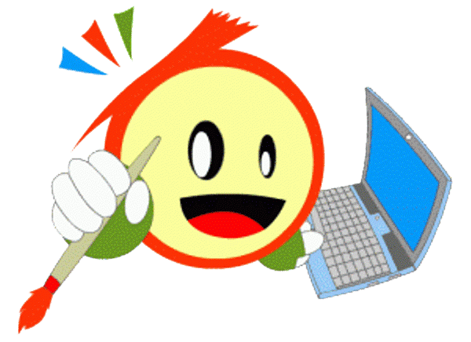

Sumber Belajar Menurut Teknologi Pendidikan
Segala sesuatu yang berada diluar diri siswa baik berupa orang maupun benda, pengalaman serta lingkungan yang dapat dipergunakan memudahkan proses belajar dan kegiatan pengajaran secara efektif dan efisien dalam bentuk abstrak atau konkret.
